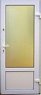
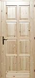
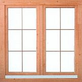
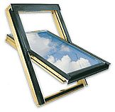
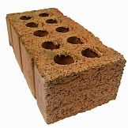
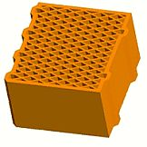

Beltéri ajtók
|  | Az általunk kínált beltéri ajtók többféle kivitelben választhatók. Méretre legyártva, egy- és kétszárnyú, különböző arányban üvegezett. Akár hangszigetelő vagy golyóálló üvegezéssel. Zárszerkezetek egész skáláját kínáljuk, az egyszerű tolóajtós rendszertől a többpontos biztonsági zárakig. |
Kültéri ajtók
|  | A kültéri ajtó a lakás és iroda első bútora. Klasszikus és üvegbetétes, fa és műanyag borítású, egyszerű és acélmagos szerkezettel, szabványos és egyéni méretezéssel egyaránt tudjuk szállítani. |
Fakeretes ablakok
|  | Klasszikus és hőszigetelt üvegből, szekcionált és egyfelületű kivitelben, akár kiemelt hő- vagy hangszigeteléssel, sőt már golyóálló változatban is. |
Műanyagkeretes ablakok
 |
A legjobb minőségű, két és háromrétegű hőszigetelt üvegezés. Két- három- vagy négyrészes - akár mind bukó-nyíló kivitelben. Méretre szabva, az Ön igényeihez igazodva. |
Tetőtéri ablakok
|  | A különleges igénybevételhez igazítva, többszörös vízzáró és vízelvezető megoldással. Napvédővel vagy anélkül, akár sötétített üveggel is. |
Hagyományos téglák
|  | Jó építőanyag nélkül nincs építkezés. Kínálatunkban most akciós a belső elválasztó falakhoz ajánlott klasszikus égetett tégla. |
Hőszigetelő téglák
|  | A falakon kiáramló hő súlyos pénzveszteséget jelent minden épületben. Ne csak nyílászárói esetében gondoljon a hőszigetelésre, hanem már az építkezés megkezdésénél, a falazati tégláknál is! |